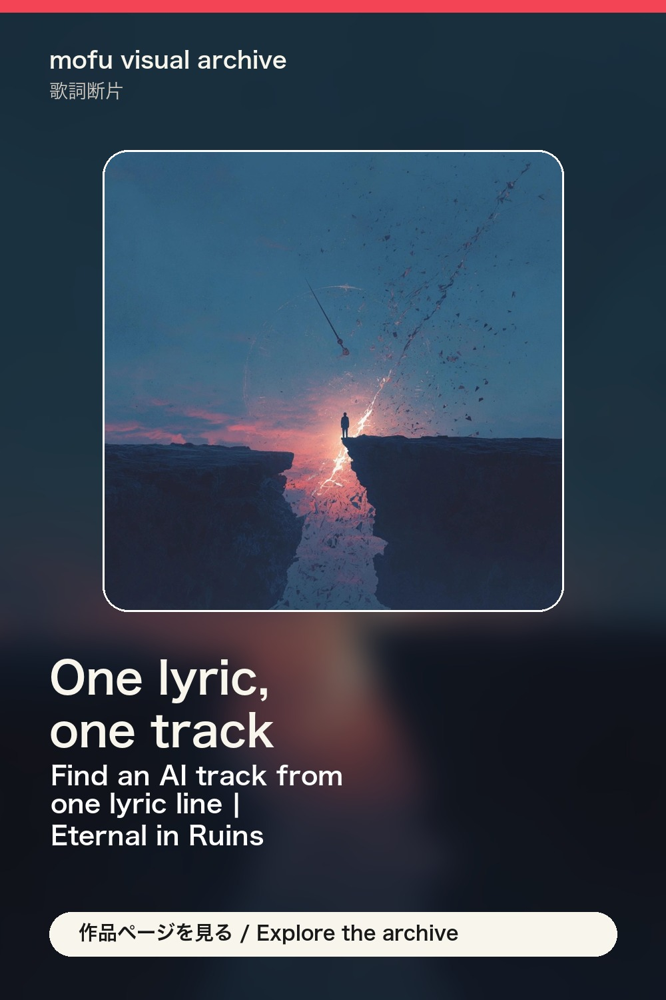

歌詞断片 / mofu visual archive
Find an AI track from one lyric line | Eternal in Ruins
Explore “Eternal in Ruins” through one lyric fragment, the matching cover art, and a track to explore in mofu visual archive. Release order 008. Lyric fragment: Shadows hidden behind the light they beckon us inside. Keywords: song lyrics, lyric fragment, emotional AI music, dark pop lyrics.
song lyrics, lyric fragment, emotional AI music, dark pop lyrics
Track: Eternal in Ruins